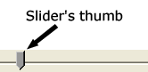

So let's begin
Graphics / Multimedia
Semantics & Markup

Markup for Applications
Microdata
Microdata is a subset of making a document have meaning to machines, just as it has meaning to a reader of the document. With meaning, I mean providing the meta data in a way that can be used by a machine reading the document and to allow that data to be processed
WAI-ARIA Attributes
WAI-ARIA is a specification that provides a means of describing roles, states,
and properties for custom widgets so that they are recognisable and usable
by assistive technology users.
WAI-ARIA also provides a mechanism to ensure
that users of assistive technologies are aware of updates in the application.
What am I ?


Keyboard Navigation
Live demo here

Offline / Storage
- Local Storage (Chrome + Developer Tools)
- Session Storage
- Web SQL Database
- IndexedDB
- Application Cache
Realtime / Communication
- Web Workers
- WebSocket (demo Network compare to NodeChat)
- Notifications
File / Hardware Access
- Native Drag & Drop
- Desktop Drag-In
- Desktop Drag-Out
- FileSystem APIs
- Geolocation (not working in TR network)
- Device Orientation (try view on your iPhone or Andriod!
http://www.html5rocks.com/en/tutorials/
device/orientation/deviceorientationsample.html) - Speech Input
Q &A ?